Paco Flores ha llegado ya a la antesala de su debut como entrenador en Primera desde principio de temporada.
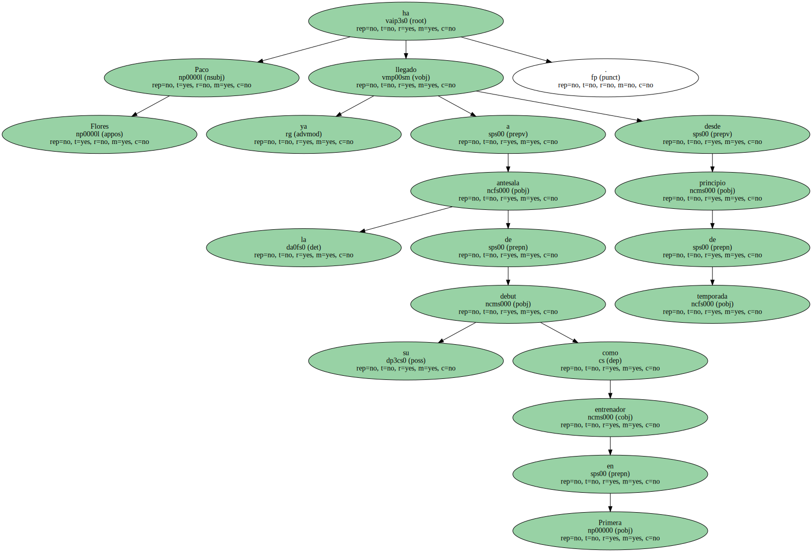El técnico del Espanyol , que en anteriores ocasiones se hizo cargo del equipo a mitad de campeonato , realizará hoy su última prueba para el comienzo de la Liga ante el AEK de Atenas ( 19.00 horas , TV-3 ) , un equipo que , como el Espanyol , también disputará la UEFA.
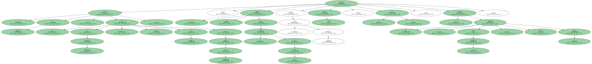Flores , sin embargo , vio alterados sus planes ya que Cristóbal y De Lucas se lesionaron en el entrenamiento que la plantilla realizó ayer antes de partir hacia Grecia.

" Será una buena prueba para ver las posibilidades de algunos jugadores y la capacidad del equipo , sobre todo en el aspecto físico " , explicó el entrenador del Espanyol , que considera al AEK Atenas " un equipo difícil ".
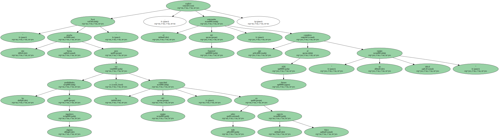Flores ha desplazado a los 18 jugadores que tiene disponibles , entre los que no están los internacionales Galca , Pochettino , Tamudo y Toni Velamazán.
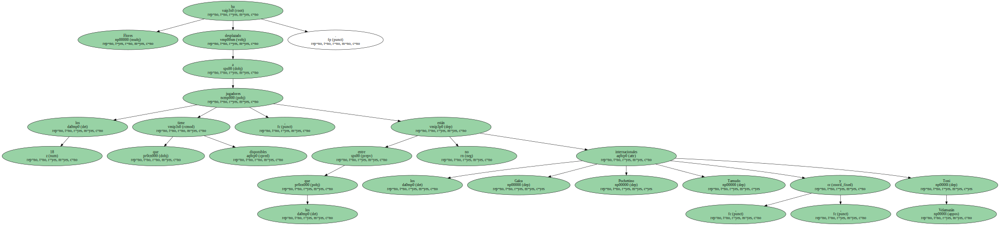El lateral Cristóbal se quedó en Barcelona a causa de una contractura en un abductor , que no le impedirá estar en el primer partido de Liga frente al Zaragoza , Según confirmó el doctor Salvador Oliveras.
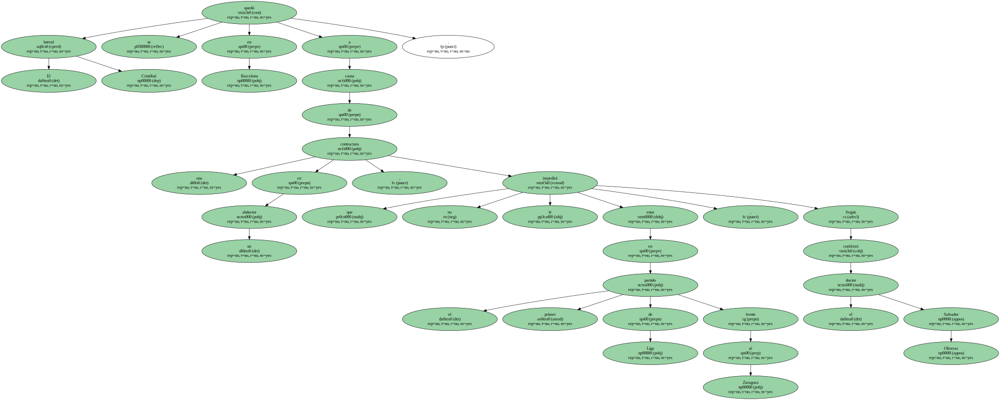Peor pronóstico tiene Quique de Lucas , que puede estar dos semanas de baja por el esguince que se produjo ayer en el tobillo del pie izquierdo.
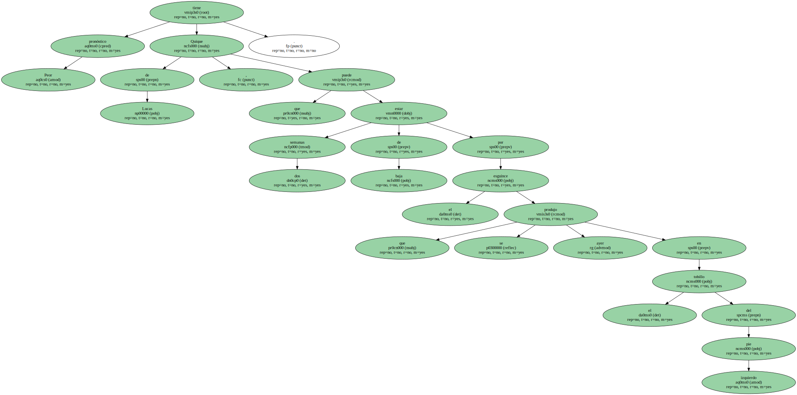La afición blanquiazul.
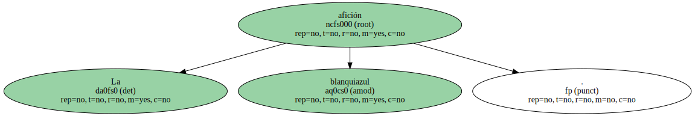A pesar de todos los inconvenientes , Flores dice que ve a su equipo " muy bien ".
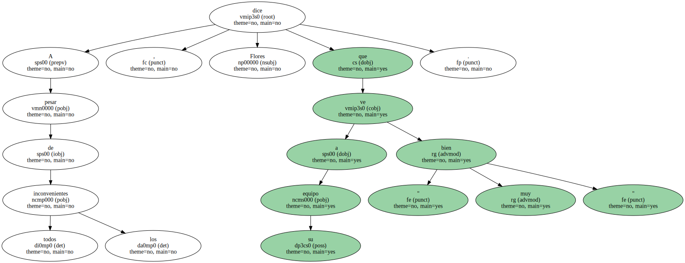También quiso puntualizar ayer las críticas a la afición del Espanyol que hizo antes y después del partido de vuelta de la Supercopa frente al Deportivo.
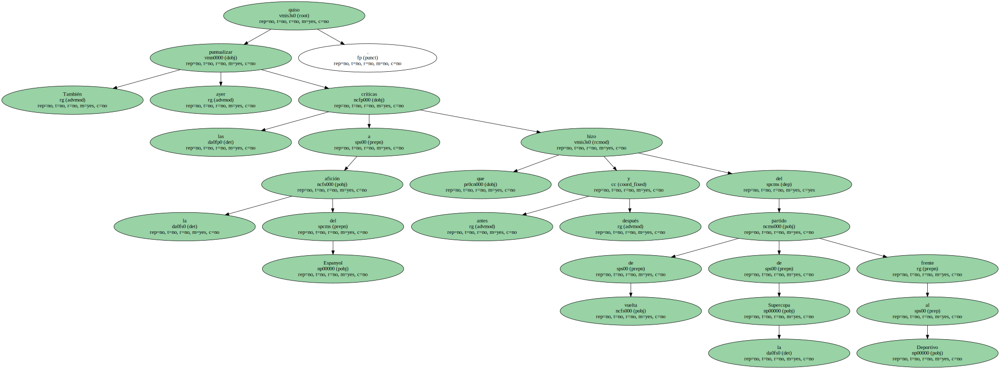" Jamás he querido criticar a nadie " , señaló , tras declararse blanquiazul de siempre y asegurar que sólo se marchará del club cuando lo echen.
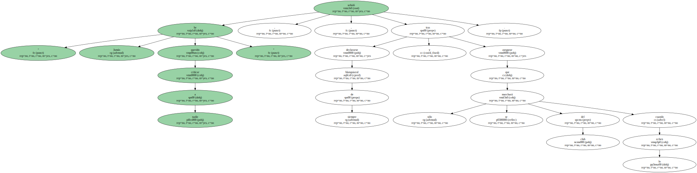Flores recordó el agradecimiento que hizo a los aficionados por el apoyo decisivo que protagonizaron en la consecución del título de Copa.

" Sin ellos no somos absolutamente nada " , dijo para puntualizar sus alabanzas a los aficionados del Deportivo en detrimento de los del Espanyol.
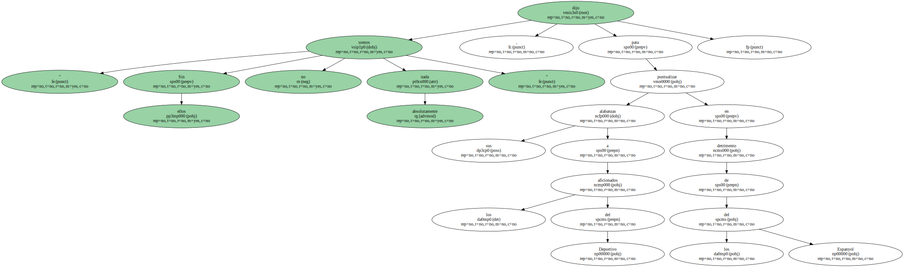" En mi ánimo jamás estuvo criticar , sino motivar para que la gente acuda al terreno de juego " , añadió el técnico.
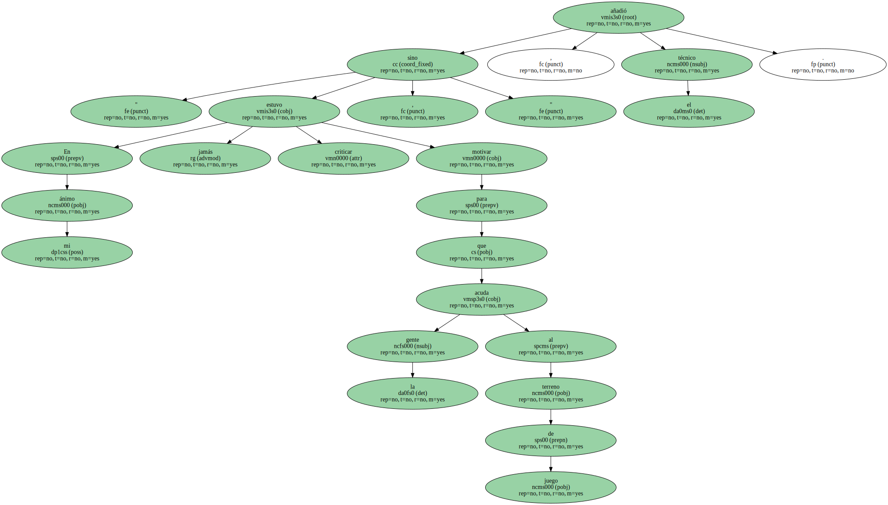